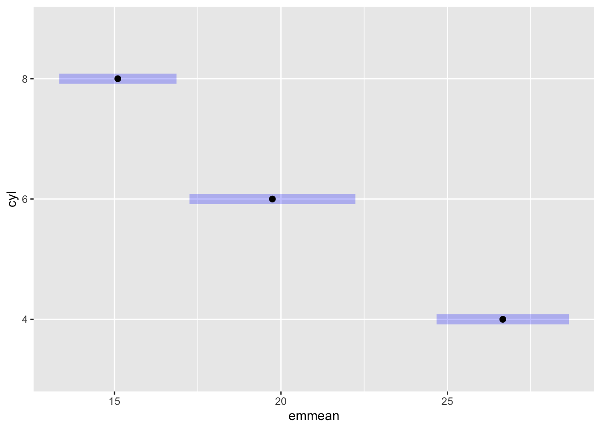
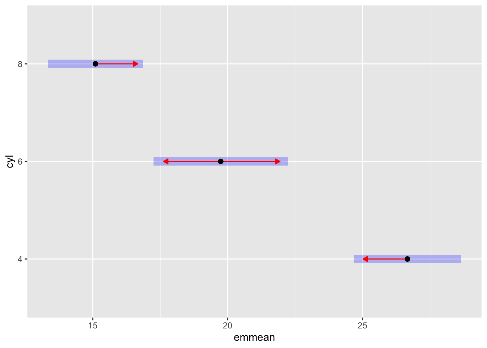
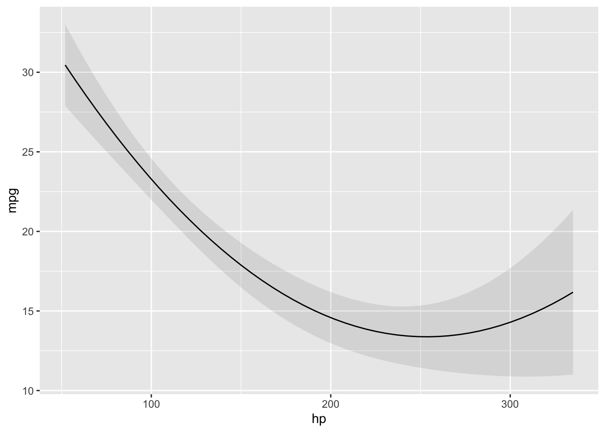
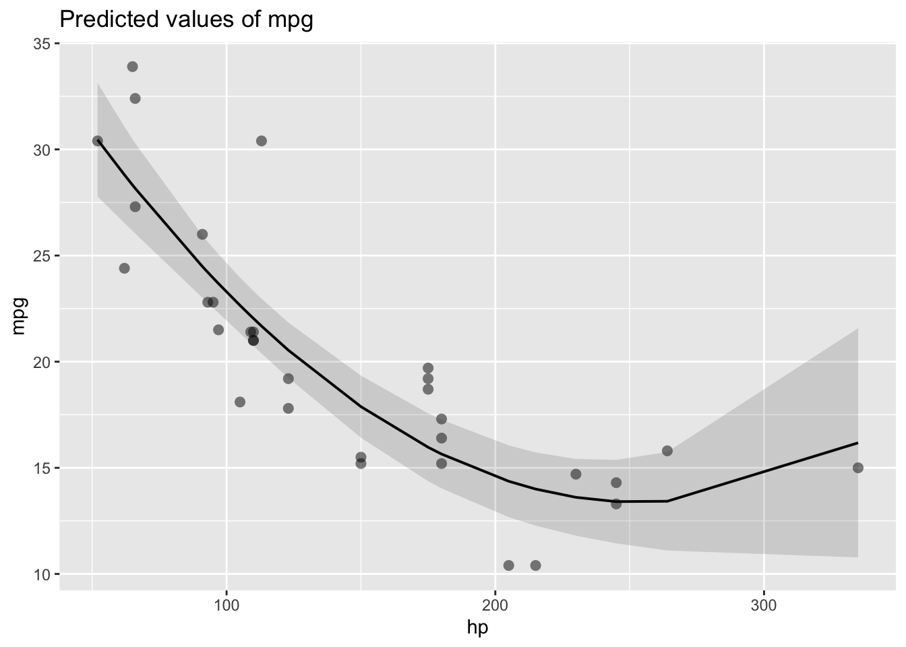
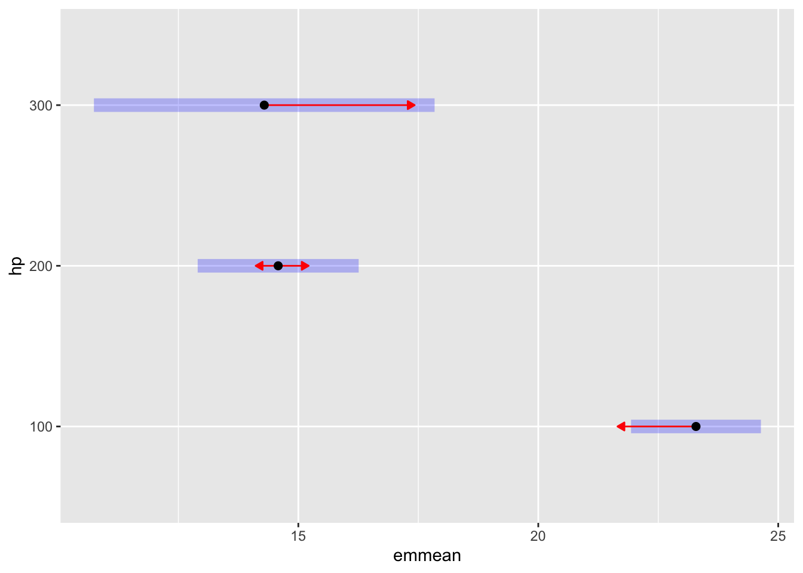
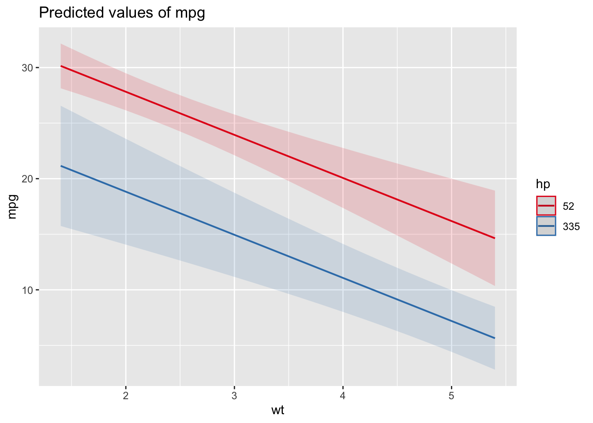
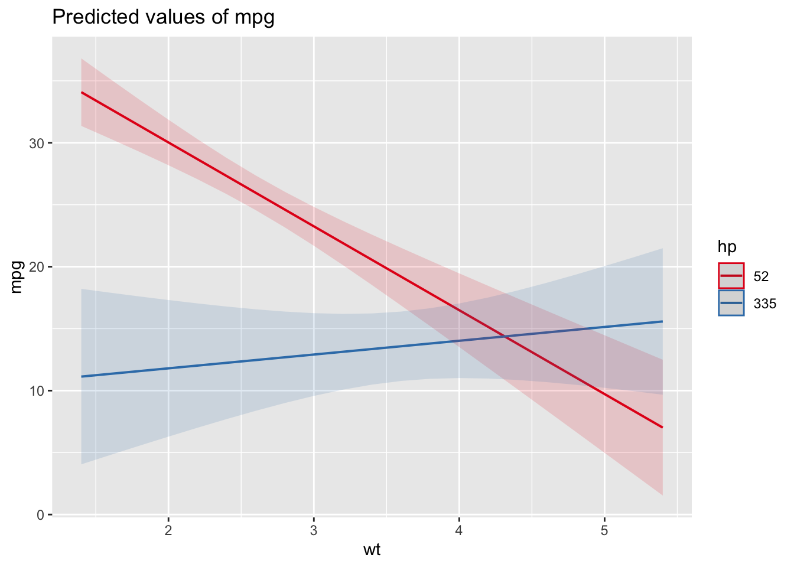

library(tidyverse)
library(emmeans)
library(marginaleffects)
library(ggeffects)
library(sjPlot)
library(performance)XXX
source:
- https://youtu.be/_okuMw4JFfU
- XXX
Setup environment
One categorical predictor
d <- mtcars %>%
mutate(cyl = factor(cyl),
am = factor(am),
gear = factor(gear))
m1 = lm(mpg ~ cyl, d)
summary(m1)
Call:
lm(formula = mpg ~ cyl, data = d)
Residuals:
Min 1Q Median 3Q Max
-5.264 -1.836 0.029 1.389 7.236
Coefficients:
Estimate Std. Error t value Pr(>|t|)
(Intercept) 26.664 0.972 27.44 < 0.0000000000000002 ***
cyl6 -6.921 1.558 -4.44 0.00012 ***
cyl8 -11.564 1.299 -8.90 0.00000000086 ***
---
Signif. codes: 0 '***' 0.001 '**' 0.01 '*' 0.05 '.' 0.1 ' ' 1
Residual standard error: 3.22 on 29 degrees of freedom
Multiple R-squared: 0.732, Adjusted R-squared: 0.714
F-statistic: 39.7 on 2 and 29 DF, p-value: 0.00000000498emmeans(m1, ~ cyl) cyl emmean SE df lower.CL upper.CL
4 26.7 0.972 29 24.7 28.7
6 19.7 1.218 29 17.3 22.2
8 15.1 0.861 29 13.3 16.9
Confidence level used: 0.95 emmeans(m1, ~ cyl) %>% plot()
emmeans(m1, pairwise ~ cyl)$emmeans
cyl emmean SE df lower.CL upper.CL
4 26.7 0.972 29 24.7 28.7
6 19.7 1.218 29 17.3 22.2
8 15.1 0.861 29 13.3 16.9
Confidence level used: 0.95
$contrasts
contrast estimate SE df t.ratio p.value
cyl4 - cyl6 6.92 1.56 29 4.441 0.0003
cyl4 - cyl8 11.56 1.30 29 8.905 <.0001
cyl6 - cyl8 4.64 1.49 29 3.112 0.0112
P value adjustment: tukey method for comparing a family of 3 estimates emmeans(m1, pairwise ~ cyl, infer = TRUE)$emmeans
cyl emmean SE df lower.CL upper.CL t.ratio p.value
4 26.7 0.972 29 24.7 28.7 27.437 <.0001
6 19.7 1.218 29 17.3 22.2 16.206 <.0001
8 15.1 0.861 29 13.3 16.9 17.529 <.0001
Confidence level used: 0.95
$contrasts
contrast estimate SE df lower.CL upper.CL t.ratio p.value
cyl4 - cyl6 6.92 1.56 29 3.072 10.77 4.441 0.0003
cyl4 - cyl8 11.56 1.30 29 8.356 14.77 8.905 <.0001
cyl6 - cyl8 4.64 1.49 29 0.958 8.33 3.112 0.0112
Confidence level used: 0.95
Conf-level adjustment: tukey method for comparing a family of 3 estimates
P value adjustment: tukey method for comparing a family of 3 estimates pairs(emmeans(m1, ~ cyl)) contrast estimate SE df t.ratio p.value
cyl4 - cyl6 6.92 1.56 29 4.441 0.0003
cyl4 - cyl8 11.56 1.30 29 8.905 <.0001
cyl6 - cyl8 4.64 1.49 29 3.112 0.0112
P value adjustment: tukey method for comparing a family of 3 estimates contrast(emmeans(m1, ~ cyl), "pairwise") contrast estimate SE df t.ratio p.value
cyl4 - cyl6 6.92 1.56 29 4.441 0.0003
cyl4 - cyl8 11.56 1.30 29 8.905 <.0001
cyl6 - cyl8 4.64 1.49 29 3.112 0.0112
P value adjustment: tukey method for comparing a family of 3 estimates emmeans(m1, pairwise ~ cyl) %>% plot(comparisons = TRUE)
emmeans = estimated marginal means
estimated -> means are estimated by averaging fitted values/model predictions, not the input data
marginal -> means are estimated by averaging a group/margin of fitted values
means -> averages (in the general sense)
For a categorical predictor, each category is a margin.
ref_grid(m1)'emmGrid' object with variables:
cyl = 4, 6, 8For a numeric predictor, its mean is the margin.
m2 = lm(mpg ~ gear + am + hp, d)
ref_grid(m2)'emmGrid' object with variables:
gear = 3, 4, 5
am = 0, 1
hp = 146.69We can estimate means for each margin/point in the reference grid.
One numerical predictor
m3 <- lm(mpg ~ hp, d)
summary(m3)
Call:
lm(formula = mpg ~ hp, data = d)
Residuals:
Min 1Q Median 3Q Max
-5.712 -2.112 -0.885 1.582 8.236
Coefficients:
Estimate Std. Error t value Pr(>|t|)
(Intercept) 30.0989 1.6339 18.42 < 0.0000000000000002 ***
hp -0.0682 0.0101 -6.74 0.00000018 ***
---
Signif. codes: 0 '***' 0.001 '**' 0.01 '*' 0.05 '.' 0.1 ' ' 1
Residual standard error: 3.86 on 30 degrees of freedom
Multiple R-squared: 0.602, Adjusted R-squared: 0.589
F-statistic: 45.5 on 1 and 30 DF, p-value: 0.000000179ref_grid(m3)'emmGrid' object with variables:
hp = 146.69emmeans(m3, ~ hp) hp emmean SE df lower.CL upper.CL
147 20.1 0.683 30 18.7 21.5
Confidence level used: 0.95 predict(m3, newdata = ref_grid(m3)) 1
20.09 predict(m3, newdata = list(hp = mean(d$hp))) 1
20.09 Reduce covariate to its range:
ref_grid(m3, ~ hp, cov.reduce = range)'emmGrid' object with variables:
hp = 52, 335emmeans(m3, ~ hp, cov.reduce = range) hp emmean SE df lower.CL upper.CL
52 26.55 1.18 30 24.15 29.0
335 7.24 2.02 30 3.11 11.4
Confidence level used: 0.95 predict(m3, newdata = list(hp = c(52, 335))) 1 2
26.551 7.242 d %>% filter(hp %in% range(hp)) %>% rownames_to_column() %>% select(rowname, mpg, hp)predictions(m3, newdata = datagrid(hp = range))predictions(m3, newdata = datagridcf(hp = range), by = "hp")m4 <- lm(mpg ~ poly(hp, 2), d)
plot_predictions(m4, condition = "hp")
plot_model(m4, type = "pred", show.data = TRUE)$hp
emmeans(m4, ~ hp, at = list(hp = c(100, 200, 300))) %>% plot(comparisons = TRUE)
emmeans(m4, pairwise ~ hp, at = list(hp = c(100, 200, 300)))$emmeans
hp emmean SE df lower.CL upper.CL
100 23.3 0.661 29 21.9 24.6
200 14.6 0.820 29 12.9 16.3
300 14.3 1.735 29 10.7 17.8
Confidence level used: 0.95
$contrasts
contrast estimate SE df t.ratio p.value
hp100 - hp200 8.71 0.919 29 9.477 <.0001
hp100 - hp300 9.00 1.945 29 4.626 0.0002
hp200 - hp300 0.29 1.728 29 0.168 0.9846
P value adjustment: tukey method for comparing a family of 3 estimates One categorical + one numeric predictor
library(ISLR)
set.seed(1)
salary <- Wage %>%
group_by(jobclass) %>%
sample_n(50)
salarym <- lm(wage ~ jobclass + age, salary)
summary(m)
Call:
lm(formula = wage ~ jobclass + age, data = salary)
Residuals:
Min 1Q Median 3Q Max
-74.70 -17.52 -1.19 14.36 152.57
Coefficients:
Estimate Std. Error t value Pr(>|t|)
(Intercept) 58.800 11.694 5.03 0.0000023 ***
jobclass2. Information 18.524 6.487 2.86 0.0053 **
age 1.017 0.271 3.75 0.0003 ***
---
Signif. codes: 0 '***' 0.001 '**' 0.01 '*' 0.05 '.' 0.1 ' ' 1
Residual standard error: 32.3 on 97 degrees of freedom
Multiple R-squared: 0.201, Adjusted R-squared: 0.184
F-statistic: 12.2 on 2 and 97 DF, p-value: 0.0000191m.no_age = lm(wage ~ jobclass, salary)
compare_performance(m, m.no_age)ref_grid(m)'emmGrid' object with variables:
jobclass = 1. Industrial, 2. Information
age = 40.8emmeans(m, ~ jobclass) # at average age of 40.8 jobclass emmean SE df lower.CL upper.CL
1. Industrial 100 4.58 97 91.2 109
2. Information 119 4.58 97 109.7 128
Confidence level used: 0.95 emmeans(m,
pairwise ~ jobclass | age,
at = list(age = c(25, mean(salary$age), 65)))$emmeans
age = 25.0:
jobclass emmean SE df lower.CL upper.CL
1. Industrial 84.2 6.07 97 72.2 96.2
2. Information 102.7 6.46 97 89.9 115.6
age = 40.8:
jobclass emmean SE df lower.CL upper.CL
1. Industrial 100.3 4.58 97 91.2 109.4
2. Information 118.8 4.58 97 109.7 127.9
age = 65.0:
jobclass emmean SE df lower.CL upper.CL
1. Industrial 124.9 8.23 97 108.5 141.2
2. Information 143.4 7.75 97 128.0 158.8
Confidence level used: 0.95
$contrasts
age = 25.0:
contrast estimate SE df t.ratio p.value
1. Industrial - 2. Information -18.5 6.49 97 -2.856 0.0053
age = 40.8:
contrast estimate SE df t.ratio p.value
1. Industrial - 2. Information -18.5 6.49 97 -2.856 0.0053
age = 65.0:
contrast estimate SE df t.ratio p.value
1. Industrial - 2. Information -18.5 6.49 97 -2.856 0.0053emmeans(m,
pairwise ~ age | jobclass,
at = list(age = c(25, mean(salary$age), 65)))$emmeans
jobclass = 1. Industrial:
age emmean SE df lower.CL upper.CL
25.0 84.2 6.07 97 72.2 96.2
40.8 100.3 4.58 97 91.2 109.4
65.0 124.9 8.23 97 108.5 141.2
jobclass = 2. Information:
age emmean SE df lower.CL upper.CL
25.0 102.7 6.46 97 89.9 115.6
40.8 118.8 4.58 97 109.7 127.9
65.0 143.4 7.75 97 128.0 158.8
Confidence level used: 0.95
$contrasts
jobclass = 1. Industrial:
contrast estimate SE df t.ratio p.value
age25 - age40.8 -16.1 4.28 97 -3.751 0.0009
age25 - age65 -40.7 10.84 97 -3.751 0.0009
age40.8 - age65 -24.6 6.56 97 -3.751 0.0009
jobclass = 2. Information:
contrast estimate SE df t.ratio p.value
age25 - age40.8 -16.1 4.28 97 -3.751 0.0009
age25 - age65 -40.7 10.84 97 -3.751 0.0009
age40.8 - age65 -24.6 6.56 97 -3.751 0.0009
P value adjustment: tukey method for comparing a family of 3 estimates One categorical + one categorical predictor
m <- lm(mpg ~ am + cyl, d)
summary(m)
Call:
lm(formula = mpg ~ am + cyl, data = d)
Residuals:
Min 1Q Median 3Q Max
-5.962 -1.497 -0.206 1.891 6.538
Coefficients:
Estimate Std. Error t value Pr(>|t|)
(Intercept) 24.80 1.32 18.75 < 0.0000000000000002 ***
am1 2.56 1.30 1.97 0.05846 .
cyl6 -6.16 1.54 -4.01 0.00041 ***
cyl8 -10.07 1.45 -6.93 0.00000015 ***
---
Signif. codes: 0 '***' 0.001 '**' 0.01 '*' 0.05 '.' 0.1 ' ' 1
Residual standard error: 3.07 on 28 degrees of freedom
Multiple R-squared: 0.765, Adjusted R-squared: 0.74
F-statistic: 30.4 on 3 and 28 DF, p-value: 0.00000000596ref_grid(m)'emmGrid' object with variables:
am = 0, 1
cyl = 4, 6, 8emmeans(m, pairwise ~ cyl)$emmeans
cyl emmean SE df lower.CL upper.CL
4 26.1 0.973 28 24.1 28.1
6 19.9 1.165 28 17.5 22.3
8 16.0 0.943 28 14.1 17.9
Results are averaged over the levels of: am
Confidence level used: 0.95
$contrasts
contrast estimate SE df t.ratio p.value
cyl4 - cyl6 6.16 1.54 28 4.009 0.0012
cyl4 - cyl8 10.07 1.45 28 6.933 <.0001
cyl6 - cyl8 3.91 1.47 28 2.660 0.0332
Results are averaged over the levels of: am
P value adjustment: tukey method for comparing a family of 3 estimates What does Results are averaged over the levels of: am means?
emmeans(m, pairwise ~ cyl | am)$emmeans
am = 0:
cyl emmean SE df lower.CL upper.CL
4 24.8 1.323 28 22.1 27.5
6 18.6 1.288 28 16.0 21.3
8 14.7 0.842 28 13.0 16.5
am = 1:
cyl emmean SE df lower.CL upper.CL
4 27.4 0.992 28 25.3 29.4
6 21.2 1.378 28 18.4 24.0
8 17.3 1.383 28 14.5 20.1
Confidence level used: 0.95
$contrasts
am = 0:
contrast estimate SE df t.ratio p.value
cyl4 - cyl6 6.16 1.54 28 4.009 0.0012
cyl4 - cyl8 10.07 1.45 28 6.933 <.0001
cyl6 - cyl8 3.91 1.47 28 2.660 0.0332
am = 1:
contrast estimate SE df t.ratio p.value
cyl4 - cyl6 6.16 1.54 28 4.009 0.0012
cyl4 - cyl8 10.07 1.45 28 6.933 <.0001
cyl6 - cyl8 3.91 1.47 28 2.660 0.0332
P value adjustment: tukey method for comparing a family of 3 estimates mean(c(24.8, 27.4))[1] 26.1mean(c(18.6, 21.2))[1] 19.9mean(c(14.7, 17.3))[1] 16For a numeric predictor, emmeans are estimated for the mean of that covariate.
For a categorical predictor, emmeans are estimated by calculating the average of the emmeans of each category.
Two numeric predictors
m <- lm(mpg ~ hp + wt, d)
summary(m)
Call:
lm(formula = mpg ~ hp + wt, data = d)
Residuals:
Min 1Q Median 3Q Max
-3.941 -1.600 -0.182 1.050 5.854
Coefficients:
Estimate Std. Error t value Pr(>|t|)
(Intercept) 37.22727 1.59879 23.28 < 0.0000000000000002 ***
hp -0.03177 0.00903 -3.52 0.0015 **
wt -3.87783 0.63273 -6.13 0.0000011 ***
---
Signif. codes: 0 '***' 0.001 '**' 0.01 '*' 0.05 '.' 0.1 ' ' 1
Residual standard error: 2.59 on 29 degrees of freedom
Multiple R-squared: 0.827, Adjusted R-squared: 0.815
F-statistic: 69.2 on 2 and 29 DF, p-value: 0.00000000000911ref_grid(m)'emmGrid' object with variables:
hp = 146.69
wt = 3.2172emmeans(m, ~ wt | hp, cov.reduce = range)hp = 52:
wt emmean SE df lower.CL upper.CL
1.51 29.71 0.943 29 27.78 31.64
5.42 14.54 2.113 29 10.22 18.86
hp = 335:
wt emmean SE df lower.CL upper.CL
1.51 20.72 2.585 29 15.43 26.00
5.42 5.55 1.387 29 2.71 8.39
Confidence level used: 0.95 # without interactions
lm(mpg ~ hp + wt, d) %>%
plot_model(type = "pred", terms = c("wt", "hp[52,335]"))
lm(mpg ~ hp + wt, d) %>%
emmeans(pairwise ~ wt | hp, cov.reduce = range)$emmeans
hp = 52:
wt emmean SE df lower.CL upper.CL
1.51 29.71 0.943 29 27.78 31.64
5.42 14.54 2.113 29 10.22 18.86
hp = 335:
wt emmean SE df lower.CL upper.CL
1.51 20.72 2.585 29 15.43 26.00
5.42 5.55 1.387 29 2.71 8.39
Confidence level used: 0.95
$contrasts
hp = 52:
contrast estimate SE df t.ratio p.value
wt1.513 - wt5.424 15.2 2.47 29 6.129 <.0001
hp = 335:
contrast estimate SE df t.ratio p.value
wt1.513 - wt5.424 15.2 2.47 29 6.129 <.0001# with interactions
lm(mpg ~ hp * wt, d) %>%
plot_model(type = "pred", terms = c("wt", "hp[52,335]"))
lm(mpg ~ hp * wt, d) %>%
emmeans(pairwise ~ wt | hp, cov.reduce = range)$emmeans
hp = 52:
wt emmean SE df lower.CL upper.CL
1.51 33.32 1.24 28 30.78 35.9
5.42 6.85 2.70 28 1.33 12.4
hp = 335:
wt emmean SE df lower.CL upper.CL
1.51 11.26 3.31 28 4.48 18.0
5.42 15.61 2.92 28 9.63 21.6
Confidence level used: 0.95
$contrasts
hp = 52:
contrast estimate SE df t.ratio p.value
wt1.513 - wt5.424 26.47 3.65 28 7.261 <.0001
hp = 335:
contrast estimate SE df t.ratio p.value
wt1.513 - wt5.424 -4.35 5.59 28 -0.778 0.4430─ Session info ───────────────────────────────────────────────────────────────
setting value
version R version 4.3.0 (2023-04-21)
os macOS Ventura 13.1
system x86_64, darwin20
ui X11
language (EN)
collate en_US.UTF-8
ctype en_US.UTF-8
tz America/New_York
date 2023-04-28
pandoc 3.1.2 @ /usr/local/bin/ (via rmarkdown)
─ Packages ───────────────────────────────────────────────────────────────────
package * version date (UTC) lib source
backports 1.4.1 2021-12-13 [1] CRAN (R 4.3.0)
bayestestR 0.13.1 2023-04-07 [1] CRAN (R 4.3.0)
boot 1.3-28.1 2022-11-22 [2] CRAN (R 4.3.0)
broom 1.0.4 2023-03-11 [1] CRAN (R 4.3.0)
checkmate 2.1.0 2022-04-21 [1] CRAN (R 4.3.0)
cli 3.6.1 2023-03-23 [1] CRAN (R 4.3.0)
coda 0.19-4 2020-09-30 [1] CRAN (R 4.3.0)
colorspace 2.1-0 2023-01-23 [1] CRAN (R 4.3.0)
data.table 1.14.8 2023-02-17 [1] CRAN (R 4.3.0)
digest 0.6.31 2022-12-11 [1] CRAN (R 4.3.0)
dplyr * 1.1.2 2023-04-20 [1] CRAN (R 4.3.0)
emmeans * 1.8.5 2023-03-08 [1] CRAN (R 4.3.0)
estimability 1.4.1 2022-08-05 [1] CRAN (R 4.3.0)
evaluate 0.20 2023-01-17 [1] CRAN (R 4.3.0)
fansi 1.0.4 2023-01-22 [1] CRAN (R 4.3.0)
farver 2.1.1 2022-07-06 [1] CRAN (R 4.3.0)
fastmap 1.1.1 2023-02-24 [1] CRAN (R 4.3.0)
forcats * 1.0.0 2023-01-29 [1] CRAN (R 4.3.0)
generics 0.1.3 2022-07-05 [1] CRAN (R 4.3.0)
ggeffects * 1.2.1 2023-04-02 [1] CRAN (R 4.3.0)
ggplot2 * 3.4.2 2023-04-03 [1] CRAN (R 4.3.0)
glue 1.6.2 2022-02-24 [1] CRAN (R 4.3.0)
gtable 0.3.3 2023-03-21 [1] CRAN (R 4.3.0)
haven 2.5.2 2023-02-28 [1] CRAN (R 4.3.0)
hms 1.1.3 2023-03-21 [1] CRAN (R 4.3.0)
htmltools 0.5.5 2023-03-23 [1] CRAN (R 4.3.0)
htmlwidgets 1.6.2 2023-03-17 [1] CRAN (R 4.3.0)
insight 0.19.1 2023-03-18 [1] CRAN (R 4.3.0)
ISLR * 1.4 2021-09-15 [1] CRAN (R 4.3.0)
jsonlite 1.8.4 2022-12-06 [1] CRAN (R 4.3.0)
knitr 1.42 2023-01-25 [1] CRAN (R 4.3.0)
labeling 0.4.2 2020-10-20 [1] CRAN (R 4.3.0)
lattice 0.21-8 2023-04-05 [2] CRAN (R 4.3.0)
lifecycle 1.0.3 2022-10-07 [1] CRAN (R 4.3.0)
lme4 1.1-32 2023-03-14 [1] CRAN (R 4.3.0)
lubridate * 1.9.2 2023-02-10 [1] CRAN (R 4.3.0)
magrittr 2.0.3 2022-03-30 [1] CRAN (R 4.3.0)
marginaleffects * 0.11.1 2023-03-31 [1] CRAN (R 4.3.0)
MASS 7.3-59 2023-04-21 [2] CRAN (R 4.3.0)
Matrix 1.5-4 2023-04-04 [2] CRAN (R 4.3.0)
minqa 1.2.5 2022-10-19 [1] CRAN (R 4.3.0)
modelr 0.1.11 2023-03-22 [1] CRAN (R 4.3.0)
munsell 0.5.0 2018-06-12 [1] CRAN (R 4.3.0)
mvtnorm 1.1-3 2021-10-08 [1] CRAN (R 4.3.0)
nlme 3.1-162 2023-01-31 [2] CRAN (R 4.3.0)
nloptr 2.0.3 2022-05-26 [1] CRAN (R 4.3.0)
performance * 0.10.3 2023-04-07 [1] CRAN (R 4.3.0)
pillar 1.9.0 2023-03-22 [1] CRAN (R 4.3.0)
pkgconfig 2.0.3 2019-09-22 [1] CRAN (R 4.3.0)
purrr * 1.0.1 2023-01-10 [1] CRAN (R 4.3.0)
R6 2.5.1 2021-08-19 [1] CRAN (R 4.3.0)
RColorBrewer 1.1-3 2022-04-03 [1] CRAN (R 4.3.0)
Rcpp 1.0.10 2023-01-22 [1] CRAN (R 4.3.0)
readr * 2.1.4 2023-02-10 [1] CRAN (R 4.3.0)
rlang 1.1.0 2023-03-14 [1] CRAN (R 4.3.0)
rmarkdown 2.21 2023-03-26 [1] CRAN (R 4.3.0)
rstudioapi 0.14 2022-08-22 [1] CRAN (R 4.3.0)
scales 1.2.1 2022-08-20 [1] CRAN (R 4.3.0)
sessioninfo 1.2.2 2021-12-06 [1] CRAN (R 4.3.0)
sjlabelled 1.2.0 2022-04-10 [1] CRAN (R 4.3.0)
sjmisc 2.8.9 2021-12-03 [1] CRAN (R 4.3.0)
sjPlot * 2.8.14 2023-04-02 [1] CRAN (R 4.3.0)
sjstats 0.18.2 2022-11-19 [1] CRAN (R 4.3.0)
stringi 1.7.12 2023-01-11 [1] CRAN (R 4.3.0)
stringr * 1.5.0 2022-12-02 [1] CRAN (R 4.3.0)
tibble * 3.2.1 2023-03-20 [1] CRAN (R 4.3.0)
tidyr * 1.3.0 2023-01-24 [1] CRAN (R 4.3.0)
tidyselect 1.2.0 2022-10-10 [1] CRAN (R 4.3.0)
tidyverse * 2.0.0 2023-02-22 [1] CRAN (R 4.3.0)
timechange 0.2.0 2023-01-11 [1] CRAN (R 4.3.0)
tzdb 0.3.0 2022-03-28 [1] CRAN (R 4.3.0)
utf8 1.2.3 2023-01-31 [1] CRAN (R 4.3.0)
vctrs 0.6.2 2023-04-19 [1] CRAN (R 4.3.0)
withr 2.5.0 2022-03-03 [1] CRAN (R 4.3.0)
xfun 0.39 2023-04-20 [1] CRAN (R 4.3.0)
xtable 1.8-4 2019-04-21 [1] CRAN (R 4.3.0)
yaml 2.3.7 2023-01-23 [1] CRAN (R 4.3.0)
[1] /Users/marcoe02/.Rlib
[2] /Library/Frameworks/R.framework/Versions/4.3-x86_64/Resources/library
──────────────────────────────────────────────────────────────────────────────